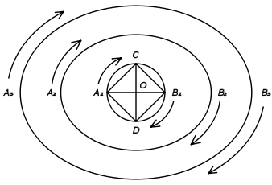
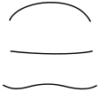

Беседа 3140 от 3877 · Беинса Дуно
Божествената усмивка
5 ч сутринта
(Времето тихо и хладно. Небето
облачно. Снежна покривка.)
„Добрата молитва“
„Духът Божи“
Ще прочета само няколко стиха от 26-а глава от „Деянията на апостолите“ (10–17).
„Венир Бенир“

Много пъти се говори за свободата. Човек трябва да знае как да освободи себе си, да бъде свободен всякога. Да му са свободни краката, очите, ушите, постъпките му, ръцете и прочее.
Тая картина представлява трите свята, в които живее човек. A3 представлява физическият свят, A2 – духовният свят, A1 е умственият Божествен свят. Във физическия свят нещата са видими. Онези в духовния свят ги усещаме. А пък нещата в умствения свят ги схващаме с ума си. Някой път предметите от физическия, духовния и Божествения светове се преплитат и тогава влизаме в едно недоразумение. Ти казваш: „Виждам нещата.“ Ти виждаш известен предмет. Виждаш една книга. Книгата, това е физическата страна. Почнеш да четеш книгата – пак я виждаш, но в това второ виждане има нещо друго. При първото виждане виждаш нещата общо: виждаш един предмет, но той не ти е ясен. Да допуснем, че ти виждаш най-първо една ябълка. Щом я виждаш, вземаш я с ръката си и имаш известен усет. Но ако откъснеш едно малко парче от нея със своите уста, имаш друг усет. Ще усетиш това, което с очите си ти не можеш да видиш.
Казвам сега: Нещата трябва да се координират. Ти казваш: „Виждам“, но с виждане всичко не става. Казваш: „Пипам“, но с пипане всичко не става. Казваш: „Вкусвам“, но с вкусване всичко не става. Казваш: „Аз искам да го попипам.“ Пипането е най-високото усещане във физическия свят. Ти имаш известно усещане за светлината. Най-хубаво усещане имат очите. Най-възвишеното схващат очите. Някой човек казва: „Аз вярвам в Бога.“ Като вярваш в Бога, какво понятие имаш за Бога? Задали ли сте си въпроса какво нещо е вярата. Казваш: „Вярвам в Бога, че е създал света.“ Хубаво, какво си научил ти, като вярваш, че Бог е създал света? Най-първо твоята вяра трябва да опиташ във физическия свят, в духовния свят и в умствения свят, и ако издържи, това е вяра. Ако я опиташ само във физическия свят, ти ще имаш само една външна представа. Ти трябва да имаш не само външна и вътрешна представа, но трябва да образуваш и известна връзка. Но не само връзка, но и отношение, и разбиране.
Любовта образува връзки между хората. На физическото поле любовта се занимава с играчки за хората, тя е създала доста играчки за хората. В духовния свят тя е създала забавление. А пък в умствения свят тя е създала учение – да учи човек. Значи най-първо имаш играчки, второ – забавляваш се и третото – учиш. Ти казваш: „Аз не обичам да се занимавам с играчки.“ Но ти ако не се занимаваш с играчки, не можеш да се забавляваш, а пък ако не си се забавлявал, не можеш да учиш. Играчките са встъпление в живота. Ако не четеш встъплението, т.е. ако не се занимаваш с играчки, не можеш да преминеш по-горе, няма да разбереш забавлението и после няма да можеш да разбереш и учението. Има известна връзка между тях.
Най-първо трябва да се освободим от известни заблуждения. Много неща са изопачени. Например този брат (Симеонов) свири цигулка, но българите казват, че цигулар къща не гледа. А пък виждаме, че този брат гледа къщата си. Но благодарение, че не работи само цигулката, но има и друго нещо. В него цигулката му иде като забавление. Когато си няма работа. Играе си и се забавлява с цигулката.
Трябва да се очистят нещата. Някой се усмихне, искат да знаят защо се усмихнал той? Някой път считат, че не се позволява усмивката, например в черква. Там трябва да бъдеш сериозен. Някои хора са толкова тъжни, че като ги погледнеш, виждаш на лицето им голяма тъга. Те казват: „Не ми върви.“ Че, какво не им върви? Какво трябва да се разбира с това? Под думите „не ми върви“ той разбира, че или обуща няма, или дрехи няма, или че хубаво ядене няма, или пари няма, или къща няма на свят, или че децата му не са добре. Или пък че службата му не е добра. Има нещо,което го смущава и той казва: „Не ми върви.“ Хубаво, за да ти върви, какво трябва да правиш? Ти имаш един кон – трябва да изучаваш характера на коня. И конят си има особености. Някои коне са хапливи. У тях носът е малко гърбавичък Това показва, че ти трябва да се пазиш. А други коне обичат да ритат. Като те ритне някой кон, ти казваш за него: „Той не е знаел да се обхожда.“ Този кон е живял с векове и казва: „Аз се опасявам от хората, които ме пипат по задницата. Аз не искам да ме пипат по задницата. Не искам да идват и отпред. Човек да бъде малко на почтено разстояние от мене. Защото съм опитал, че е опасно.“ Колко пъти вълкът е хващал коня отпред за муцуната или го е нападал отзад. Та, за да се самосъхранява, конят се е научил да хапе. Вълкът го е научил да хапе. Вълкът много пъти го е хапал и сега конят се е научил и той да хапе. Кой е научил коня да рита? Как се е научил той да рита? Задните крака на коня са като нашите ръце. Те са направени като човешките ръце. И като дойде вълкът, конят със задните крака го рита и отхвърля надалеч. И ти като се приближаваш, той мисли, че си опасен като вълка и те отхвърля надалеч. Казва ти: „По-далеч стой! Мене ми са неприятни хората, които се приближават много при мене.“ В задната част на коня е опашката му. А опашката представлява неговата мислова част. Животните мислят с опашката си. Ако искаш да знаеш дали едно животно е здраво и умно, ще му гледаш как си мърда опашката. Спре ли се опашката, да не се мърда, млекопитающето е болно вече. А пък у човека тази опашка е минала отзад нанапред – неговият нос е опашката. И в човека може да познаете неговото здравословно състояние. Трябва цяла школа, за да ви се покаже какво е здравословното състояние. Има някои състояния, които не са здравословни. (Учителят гледа надолу и ходи наведен като слаб и отчаян.) Това е нездравословно състояние. Този, който ходи така, иска да каже: „Каквото и да говориш, аз живея на Земята. Ти говориш за небето, но я ми говори нещо за Земята. Онези неща не са за мене.“
Ние казваме за някого: „Да му говорим за онзи свят.“ Какво е онзи свят? Онзи свят е разумният свят. Това, което можеш да разбереш и това, което може да внесе в тебе светлина, това е онзи свят. Това, което може да внесе в тебе едно топло чувство, това е онзи свят. Това чувство, което внася в тебе топлина, това е онзи свят. Но ти разбираш физически и казваш: „На онзи свят ще се познаваме ли ние?“ Щом в този свят не се познавате, и в онзи свят няма да се познавате. Казваш: „Ще има ли срещи в онзи свят?“ Щом се познавате, ще има срещи там. В онзи свят, или в разумния свят, ти никога не можеш да срещнеш един човек, когото не обичаш. И никога не можеш да срещнеш един човек, от когото не искаш да научиш нещо. Щом го обичаш, той става видим; и щом искаш да научиш нещо, той ще ти говори. А пък щом не го обичаш и щом не искаш да научиш нещо от него, той е невидим за тебе.
Кога човек трябва да мълчи? Човек трябва да мълчи, когато разумният говори. Да мълчите всички, когато Господ говори. Да говориш, когато разумният говори, какво подразбира това? Ако отидете при някой извор и говорите, ще ви слуша ли изворът? И той ще говори с тебе.
Да направим сега едно сравнение. Да допуснем, че един човек е нещо болен. Това е нещо, което не е под контрола на неговата воля. Всички неща, които човешката воля не може да контролира на физическото поле, в духовния свят и в умствения свят, произвеждат едно болезнено състояние в човека. Щом имаш болка, това показва, че твоята воля не може да контролира това нещо. Ти казваш на болестта си: „Иди си.“ Но тя не си отива. Ако е като войника, ще му кажеш да си отиде и той ще си отиде. Той ще ти каже: „Слушам, Ваше високоблагородие! Слушам, господин майор! Слушам, господин полковник! Слушам, владико свети.“ Ако е учител, ученикът казва: „Слушам.“ В съвременния живот ние сме си създали едно понятие за себе си, което не съответствува на нашата мисъл и на нашето сърце. Ние трябва да бъдем верни. Ти мислиш, но това, което мислиш, трябва да бъде вярно; ти чувствуваш, но това, което чувствуваш, трябва да бъде вярно; ти постъпваш, но това което постъпваш, трябва да бъде вярно Верни неща са всички, в които няма два израза. Верни неща са тези, които не можеш да ги тълкуваш по един или по друг начин. Те имат само едно тълкувание.
Казано е: „Верен и истинен“. Значи верен и истинен е този, който винаги постъпва по един начин, а не по различни начини.
Външните условия принадлежат на физическия свят. Възможностите принадлежат на духовния свят. Във физическия свят ти трябва да имаш разнообразие в условията; в духовния свят ти трябва да имаш разнообразие във възможностите. В духовния свят в условията наглед има голямо еднообразие, а разнообразието е във възможностите. В духовния свят например външно си приличат едни на други – наглед има еднообразие. И като се мръдне малко онзи, с когото говориш, като се отдалечи малко, после не можеш да го познаеш кой е. Всички си приличат като лика-прилика, като два стръка иглика. Приличат си, не можеш да ги различиш.
Та казвам: В духовния свят ти не можеш да познаеш един човек, ако не го обичаш. Във физическото поле как ще познаеш един човек? На физическото поле пък, ако не си добър, ти не можеш да познаеш човека. На физическото поле, за да познаеш един човек, трябва да бъдеш добър. Ако си добър, всички хора се отварят пред тебе. Ако не си добър, всички хора се затварят за тебе. Ние казваме: „Трябва да бъдем добри.“ Доброто е за този свят, а обичта е за онзи свят. А пък ние туряме обичта за този свят, а доброто за онзи свят. Та, доброто ще го туриш в съгласие с условията на физическото поле, а пък обичта ще туриш в съгласие с възможностите в тебе, с вътрешните стремежи на твоята душа. По този начин само човек може да прогресира.
Трябва да има човек разбиране. И ако така човек не разбира живота, той става еднообразен. Някой ти казва с висок тон: „Мисли добре.“ Ти си казваш: „Какво иска да ми каже с това?“ Или някой ти казва със среден тон: „Мисли добре.“ Или пък някой ти каже съвсем ниско същите думи. Мисълта на човека трябва да бъде строго определена – да бъде ясно какво искаш да кажеш. При говора трябва да има вътре в тебе съгласие между твоите мисли, чувства и постъпки. Трябва да има едно правилно отношение между тях, а не да говориш едно, а да разбираш друго. Как ще кажеш на един приятел: „Мисли добре“? Защо се развалят отношенията между хората? Защото не знаят как да говорят. Защо се разваля любовта между хората? Защото не знаят как да говорят. Ти казваш: „Той трябва да ме обича.“ Защо? Любовта се обича. Аз не мога да обичам един певец, който не пее добре. Дразни ме. А пък щом пее добре, аз го обичам. Обичам го без да искам, заставя ме да го обичам. Той може да бъде много хубав, красив, има маниери. Ти оставяш неговата красота. Той може да е строен, здрав, богат, но не пее – не можеш да го обичаш. Вие казвате: „Той трябва да ме обича.“ За какво трябва да те обича? Може да ви обича за вашето добро; може да ви обича за вашия светъл ум; може да ви обича за вашето благородно сърце; може да ви обича за вашата честност. Хиляди работи има, за които може да ви обича.
Ти казваш: „Какво Господ мисли заради нас?“ Казват: „Той обича всичките.“ Една неразбрана работа е това. Мислите ли, че като [си] грешник, Господ ще прояви Своята любов и ти ще можеш да я възприемеш? Мислите ли, че ако постоянно одумваш хората, Той нищо няма да ти каже. Той те слуша, но ако ти постоянно говориш все лошо за хората, Той ще има особено мнение за тебе. Още като Му кажеш първата дума, Той ще има особено мнение за тебе. Той ще те търпи. Ти ще кажеш: „Господ ме изслуша.“ Изслушването не показва още нищо. Той при слушането не одобрява твоето говорене. Той не ти е казал нещо, но те оставя сам да се досетиш. Той няма да ти каже нищо, но ще ти изпрати един такъв бъбрица при тебе – като тебе – и Той ще ти даде един урок. По някой път вие казвате: „Защо са тези лоши условия в света?“ Лошите условия показват, че не си живял както трябва. Такъв е законът. Не е за унижение това. Ти казваш някой път: „Защо дойдоха лошите условия?“ Или ти си причината, или обществото е причината, или човечеството е причината. Има някой причина, та са дошли лошите условия. И ако дойдат добрите условия при мене, или аз съм причината, или обществото, или цялото човечество. Та, ние участвуваме във всичките неща.
Та, трябва да бъдем изправни. Човек трябва да знае в даден случай кой е причината. Ако ти си причината, веднага изправи грешките, които правиш. Ако обществото е причината, ще отидеш да изправиш това общество. И ако знаеш причината, ще отидеш да изправиш тази погрешка. И ако причината за доброто си ти, ще се радваш на това. Ако обществото е причината, ще отидеш да му благодариш. Ако пък човечеството е причина, ти на човечеството ще благодариш. Ако условията са добри, ще благодариш на себе си, че си живял добре; ще благодариш на обществото, че е живяло добре; ще благодариш и на човечеството, че е живяло добре. Ако аз съм причината за добрите условия, в които живея, ще благодаря на цялото човечество. Когато на сърцето ми е добре, ще благодаря на ангелите – те са живели добре, та и на сърцето ми е добре. Ако пък светлината в ума ми е добра, ще благодаря на Бога. Това е от Божествения свят. Та, трябва да знаете в кой свят функционирате. И там трябва да изправите работите. И не само да изправяте, но нови неща трябва да се внасят. Например ти се усмихваш. Всеки ден трябва да се научиш по нов начин да се усмихваш; всеки ден трябва да се учиш по нов начин да говориш; по нов начин да чуваш; по нов начин да възприемаш уханията; по нов начин да кажеш една дума.
Сега всички вие говорите за любовта. Аз ще ви изпитам за любовта. Я ми кажете следното. Как ще произнесеш думите: „Обичам Ви!“ Как ще кажеш тия думи на обичния си? Ако ти каже някой: „Обичам Ви“ и ако при тези думи се появи светлина в ума ти, топлина в сърцето ти и енергия в тялото ти, той добре е произнесъл тия думи. Но ако ги е произнесъл, но няма никаква топлина, светлина и сила в тебе, то тази дума не е изговорена добре, а механически. В онзи свят като отидете, ще ви изпитват как се усмихвате, как говорите. В онзи свят има крайна икономия. В природата съществува един закон: Бог не обича да иждивяваме излишна енергия. Там се цени и най-малката енергия. Тя има цена. Ако ти си вдигнал много нагоре ъглите на устата си, иждивяваш много енергия. И като спуснеш много надолу ъглите на устата си, пак иждивяваш много енергия. Ще се усмихнеш по възможност така, че да си направил най-малките разноски. Тази усмивка да е толкова деликатна, че едва да се забелязва. Не всички да я видят. Само зоркото око трябва да види, че си се усмихнал. Това е усмивката, която Бог оценява. Едва да се забележи. И Христос само веднъж се усмихнал и не Го видели. Веднъж видял едно умряло куче. Петър казал: „Господи, защо умря това куче?“ Христос се усмихнал малко. Искал да му каже: „Това куче умря, понеже не обичаше.“ Христос не му отговори на въпроса, а само малко се усмихна. Но аз ви казвам, че това искал да каже.
Защо умират хората? Защото не обичат. Защо страдат? Защото не обичат. Защо не им върви? Защото не обичат. Защо не могат да учат? Защото не обичат, нищо повече. Ти казваш: „Аз обичам.“ Ти обичаш, а не можеш да учиш. Ти обичаш, а не ти върви. Вие казвате: „Христос, Който е обикнал цялото човечество, колко пострада Той!“ Нищо не значат тия страдания. Те са малко. Христос имаше предвид бъдещето, което ще дойде, а не само какво ще се случи в един ден. А какво ще се случи в хилядите дни, които в бъдеще ще дойдат.
Ти се усмихваш, но това е предисловие на твоята усмивка. Какво означава твоята усмивка? Ако аз мина покрай едно умряло куче и се усмихна, аз си казвам: „Няма да постъпвам като това куче. Такъв живот няма да водя.“ Ще знам, че това е за мене едно предметно учение. Ти казваш: „Възкресението ще дойде някога.“ Всеки от вас може да съживи един мъртвец. Мъртвите хора те слушат. За да го съживиш, ще му кажеш така: „Поусмихни се.“ А пък той ще ти каже отвътре: „То се свърши.“ И ако ти му кажеш: „Усмихни се“ и той се усмихне, той веднага ще си отвори очите и ще оживее.
Умрелите слушат. Те много слушат. Толстой разправя един пример. Посетил един руски монастир и срещнал един стар калугер на 85 години, от княжески произход. Толстой му казва: „Какво те застави да станеш калугер? Ти си княз.“ Толстой, със своите дебели вежди, бил много наблюдателен и искал да знае това. Той му казва: „Кажи ми как един княз стана калугер?“ Онзи му казал: „Да ти разправя. На младини, между 11 и 21 година бях и се сгодих за една княгиня, която обичах. Но не знам как, един ден стана ми един припадък, дойдоха лекарите и констатираха, че аз съм умрял. Слушам как лекарите констатират, че съм умрял. Сърцето ми спряло. И почнаха да ме приготовляват за погребение. Донесоха и запалиха свещи при главата и краката ми. И почнаха да ми четат молитви. И аз си казах: „Това ли е смъртта?“ И видях моята възлюблена, която дойде с баща си. И бащата каза: „Плачи, за да видят хората, че го обичаш!“ Дъщерята каза: „Не го обичах аз този, но друг обичах. И от немай-къде се свързах с този.“ Князът, като чул тези думи, казал с тъга: „Господи, ако оживея, ще живея другояче.“ И той се усмихнал и оживява, и до 85-ата година служил в монастира. Той се усмихнал и оживял.
Та, и вие трябва да се научите да се усмихвате. Всеки, който не се усмихва, ще умре. Една усмивка, но не да я видят хората. След като ти дойдат големите страдания на живота, като те погледнат, да се усмихнеш в себе си; вдигни очите си нагоре и благодари на Бога, че можеш да се усмихваш. А пък ние, при най-малките страдания, ние почваме да гледаме начумерено. (Учителят представи как ходи начумерен човек.) Мене ще ме държат отговорен, понеже аз изхарчвам за няколко милиона лева енергия, за да ви представя предметно учение. Аз сега ще работя и ще поправя това. Аз зная как да поправям тия работи. Не е лесна работа. Исках да ви покажа с предметно учение какво значи това. Аз ви показах.
В недоволството вие сте майстори. Но много рядко съм срещал хора с такава хубава усмивка. При усмивката има едно координиране на нещата: ще поставиш погледа си на известен ъгъл, после ушите си, ще вземеш известна поза, ще координираш очите си със своята усмивка. Също и носа си, и ръцете, и краката си – ще вземат известна поза. Каква поза ще вземеш? При усмивката ще вземеш такава поза, че да имаш едно особено положение спрямо Слънцето и Земята. Ще вземеш отвесно положение; да не си наклонен нито наляво, нито надясно. И от двете страни трябва да се образуват прави ъгли. И тогава ще се усмихнеш. И ангелите, като видят тази усмивка на тебе, ще се зарадват, че един човек се е усмихнал, понеже много рядко се случва това. Ти тогава приличаш на едно цвете, което е цъфнало с всичката си красота. Така и те се спират на един човек, който се усмихва. Той прилича на цвете и тогава от човека излиза едно особено ухание, една особена светлина, един особен аромат и душата се проявява в своята красота и пак се скрива. Та, ангелите наблюдават това. То е цъфтене.
Ние като говорим тези неща, някой ще каже: „Но знаете ли в какво тежко положение се намирам сега?“ Че, положението на едно дърво, което гори в пещта, какво е? И положението на една кокошка, която се пече, какво е? Вие се качвате на един автомобил и плащате на шофьора. Какво е спечелил шофьорът от вас или вие какво сте спечелили? Че, не е лесна работа да бъдеш един шофьор! Само за да спечелиш пари. Ти трябва да станеш шофьор, за да се запознаеш с хората. Като дойдат, да знаеш как да отвориш вратата, да ги туриш на местата им с една учтивост, ще ги погледнеш с учтивост, ще тръгнеш както трябва и ще гледаш да не правиш сътресения. Те да са доволни, че си ги возил без сътресения. А пък сега има някои шофьори, които ще те тръснат. А пък онзи шофьор с усмивката, като те вози, ще кажеш: „Така никога не съм ходил.“
Всеки един човек е едно съкровище на Божественото. Ако ти го обичаш на физическото поле, в духовния свят и в Божествения свят, Бог ще ти покаже какво е Той. Бог крие Своите блага от хората, които не Го обичат. И много души на Земята остават неразбрани. Колко синове има, които не са разбрани от бащите си. И колко бащи има, които не са разбрани от синовете си. Колко майки има, които не са разбрани от дъщерите си; и колко дъщери има, които не са разбрани от майките си. Колко братя има, които не са разбрани от сестрите си; и колко сестри има, които не са разбрани от братята си. В този свят, в който живеем, има голяма неразбория. Не се разбираме. И като не се разбираме, ние се мъчим.
Та казвам сега: Вие носите всички на лицето си една умора. И казвате: „Тежък е животът.“ Че как е тежък един живот, който Бог е създал? Такъв е неразбраният живот. Тежка е неразбраната мисъл. Тежко е неразбраното чувство. Но всяка разбрана постъпка, всяко разбрано чувство, всяка разбрана мисъл са едно благословение. Един ден, като разбереш една мисъл, като разбереш едно чувство, като разбереш една постъпка, това е едно голямо богатство. Какво повече от това! Вие срещали ли сте хора на Истината? Виждали ли сте Истината в очите на човека? Ако търсиш Истината, ще я намериш в очите на човека; ако търсиш знание, мъдрост, търси я в ушите на хората – виж как са направени ушите. И виж като те слуша, как си поставя ушите. Трябва да посетиш един голям мъдрец, за да видиш как трябва да държиш ухото си. А пък ако търсиш човека на любовта, който те обича, гледай устата му. Устата е авторитет за любовта. И ако ти не знаеш как да си държиш устните, ти не можеш да проявиш любовта.
Проявлението на любовта зависи от съприкосновението на двете устни. Не много да ги стискаш, нито да са съвсем отворени, но да има едно леко докосване на двете устни – едно любовно състояние. И това е здравословното състояние. И когато у някои хора това съприкосновение не е правилно, те не са живели добре. Тогава краищата на устните се завършват надолу. (първата линия)

А пък има едно такова положение: (третата линия) Това е естественото положение.
Човек трябва да даде на всяка своя мисъл известен физически оттенък. Някой ден трябва да имате упражнения за устата си. Вие не си познавате устата. Някой ден трябва да имате упражнения за очите си, за ушите си, за ръцете си. Трябва да знаеш как да си държиш ръцете. Ти може да си свършил четири факултета и пак да си невежа. Не можеш да се ползуваш от това знание, което Бог ти е дал.
Ще трябва да се явим пред Бога с тялото си и Бог, като ни погледне, ще погледне най-първо очите, после ушите, после устата, след това ще погледне челото ти какво е, после скулите ти и после цялото ти тяло навсякъде, и като те погледне, че си без дефект, Той ще се зарадва, че си живял добре! А пък щом те погледне и види, че са изкривени устата ти, очите ти и прочее, Той ще види, че не си живял добре.
Ти ще се оплакваш, че външните условия са били лоши, че хората не са те познавали много добре. Тогава Господ ще ти каже: „Ами ти кого позна?“ Щом всички хора не са те познали, значи и ти не си ги познавал. Когато кажеш: „Намерих едного и го познах“, тогава пак е добре. Но да минеш в света живота си и да не познаваш нито един добър човек, тогава? Някой казва: „Няма добър човек в света!“ Поне ти си най-добрият! Ти като се намериш най-добрия човек, тоя ще ти бъде учител, той ще ти бъде баща. Като намериш най-добрата, тя ще ти бъде майка. Ако намериш други най-добри, те ще ти бъдат сестри, братя и пр. Те ще ти бъдат и слуги. Ако вие познавате хората както трябва, тогава вие ще имате един учител, един баща, една майка, един брат, една сестра, един слуга.
Думата „слуга“, и тя е опорочена. Вие мислите, че да бъде човек слуга, това е много просто нещо; вие мислите, че човек ще бъде слуга, като няма какво да прави. На Земята е така. В духовния свят най-възвишените същества стават слуги. И ако там се е отличил някой с някакво голямо отличие, тогава за производството ще го пратят на Земята, най-ученият да стане слуга, за да покаже какъв трябва да бъде слугата. И този слуга, дето и да отиде, от слуга ще стане пръв. Ако е ученик в музикално училище, щом професорът каже нещо, ще го пита: „Какво мислите Вие?“ Постоянно ще искат неговото мнение. Слугите в света трябва да бъдат най-учените хора. Да бъде човек господар е лесна работа. От небето, когато някой е прост, пращат го за господар. И когато на този глупавия господар му дават 4–5 умни слуги, за да му бъдат учители… Нали има княжески деца, които имат голямо мнение за себе си, че са от царска кръв. Те имат ред професори да ги учат. Тези професори знаят много повече от него. Не само да мисли човек, че има царска кръв.
Мнозина от вас казвате: „Аз имам Духа Божий.“ Според мене, един човек, който не учи, той няма Духа Божий; един човек, който не обича, той няма Духа Божий; един човек, който и да е, който не постъпва добре, няма Духа Божий. Щом аз имам Духа Божий, ще мисля, както Бог мисли; ще обичам, както Бог обича и ще постъпвам, както Бог постъпва. Не се изисква кой знае какво при обичта. Аз не критикувам нещата. Представете си, че ви дават едно ядене, което е сготвено преди 10 дена; друго ядене, което е сготвено преди 5 дена и друго, което е сготвено днес. Питам сега: кое ядене е по-хубаво? Онова, сготвеното преди 10 дена, преди 5 дена или сготвеното днес? Яденето, сготвено днес, е най-хубавото! Плодът, който е днес узрял, е най-хубавият! Като се изминат 4–5 дена, този плод е изгубил нещо от своята сладчина. Плодът губи своята сладчина. Плодовете не узряват еднакво. И ако садя ябълка, трябва да ходя и да наблюдавам плодовете. Тези плодове, които са на юг, узряват по-рано. Плодовете не зреят изведнъж. Някой път ще видиш само 2–3 череши узрели. Тях ще откъснеш. Вторият ден са узрели 4–5 череши. На третия ден са узрели 10–15–20 череши. Така се увеличава броят на узрелите. Ако ядеш това, което е узряло днес, ти ще приемеш това, което другаде никъде не можеш да го приемеш. А пък ти отиваш при един плод, който е презрял. Той няма тази сила. Ти на един човек ще кажеш една дума, но дума, която е узряла преди 10 дена. Не. Като кажеш една дума на един човек, да му кажеш такава дума, която е узряла днес. Много думи няма да му кажеш.
Нали има любовни писмовници. И младите, и старите дядовци пишат и те любовни писма и то много обикновени: „Сърцето ми гори“ и прочее. Но това са неща, взети от писмовника. Сърцето му не гори, но в писмовника пише така. Или пък пише: „Постоянно за тебе мисля.“ А пък той не мисли за нея, а мисли как да се облече. Тя пише: „Като мислех за тебе, та прегорих яденето.“ И това не е така, но така пише в писмовника. Не бих желал нито един от вас от любов да прегорява яденето. Оная мома, която обича един момък, никога не прегорява яденето. Това е невъзможно! Така зная аз. Която не обича, тя го изгаря всякога. И щом се ожените и жена ви прегаря яденето, тя не ви обича.
Ние да имаме любовта в най-чистата форма. Ако твоето сърце прегорява яденето за ума, тогава има ли сърцето ти любов? Човек, който обича, никога не може да каже от сърцето си една лоша дума, понеже Бог е там. Ако аз проявявам Божията любов, в дадения случай е невъзможно да кажа аз нещо лошо. Когато любовта се оттегли, това е възможно. Но при любовта е невъзможно. Не се самоизмамвайте при прекъсването на тока на любовта, че може да кажеш лоша дума; и после идва страданието.
Та казвам: Не прекъсвайте Божествения ток на любовта! Това е за самовъзпитание за вас. Някои ваши страдания идват от прекъсването на тока на любовта. Никой не знае за това ваше страдание, но това е поради прекъсването на тока на любовта. Някой път става прекъсване на тока на любовта. Стремете се да владате нещата във физическия свят, в духовния свят и в Божествения свят – да ги владате чрез закона на Любовта, чрез закона на Божията Мъдрост и чрез закона на Истината. Това е толкова лесно! Ако майките знаят как да постъпват с децата си, колко нещо би се постигнало! Някои деца много добре постъпват. Веднъж съм дал следующия пример с едно 6-годишно момиченце. Бях му дал едно карамфилче. Исках да му направя удоволствие и му го подадох. То каза: „Аз не мога да нося това карамфилче. Имам една голяма кака. Тя може, но аз не мога.“ Аз веднага разбрах: тя не може да носи едно откъснато карамфилче. И права е тя. Много умно постъпи. Вие, възрастните, често ще вземете един карамфил. Че, ако дадете някому един откъснат карамфил, ти искаш да кажеш: „Можеш ли да възстановиш живота на този откъснат карамфил?“
Не се стремете да поправяте един човек, който носи един откъснат карамфил; не се стремете да поправите един човек, който говори безразборно. Оставете го. Не се стремете да поправите един човек, който не мисли както трябва. Те са немислими работи. Ние си турим за задача да поправим хората.
Разговаряйте се с хора, на които Бог говори. Обичайте хората, които Бог обича. Що е богатство? Аз считам богат човек онзи, който е богат и на Земята, и на небето, и в Божествения свят – богат и в трите свята. На Земята е богат и щедър. Той е щедър и в чувствата, и в мислите. Навсякъде изявява Божественото. На Земята той изявява Истината, в духовния свят изявява Любовта, а пък в Божествения свят изявява Мъдростта. На Земята богатият човек си служи с Истината, в духовния свят си служи с Любовта, а пък в Божествения свят си служи с Мъдростта – това е богатият човек. А пък който е сиромах, той не може да бъде богат и на небето.
Вие някой път може да вземете следните изречения: „Блажени нищите духом“ или „Блажени кротките и смирените“. Но знаете ли какво е кротък човек? Или смирен човек, или милостив човек? Ако в тебе милосърдието е слабо, Духът ще ти каже: „Потърси Ме в Моята милост!“ Ние сега призоваваме Бога в Милостта Му, понеже ние сме крайно жестоки същества. По-жестоко същество от човека няма на Земята! У хората няма милосърдие. Милосърдието не е едно качество на човечеството. Затова трябва да призоваваме Бога в Неговото Милосърдие, за да може да ни предаде от изобилието на Своето Милосърдие, та да станем милосърдни. Човек има всичко, но милосърдие няма. Даде някому и то един лев. Бръкне някой път в джоба си, вземе 5 лева и ги тури обратно в джоба си; намери 2 лева и пак ги тури обратно, и като намери 1 лев, даде го. Или дойде някой човек при него. Дошлият е беден, той иска да му направи добро. Има палта. Взима едно палто и казва: „Ново е още.“ И като намери някое скъсано палто, с 10 дупки, даде му го. И си казва: „Аз правя добро.“ Благодаря за такова добро със съдрани палта! Ако направиш добро, направи го както трябва. Този човек има нужда от шапка. Купи му една шапка, каквато той би носил.
Ще избереш и начина на даването. Ти, като обичаш някого, няма да му занесеш шапката сам. Когато обичаш един човек, ако го обичаш, ти сам никога не му носи подарък. Щом го занесеш сам, ти ще изгубиш. Бог, Който ни обича, Той не ни носи сам. Той изпраща другите да ни носят всички Свои подаръци. Той изпраща Слънцето, дъжда, вятъра, хората и прочее, но Той никога не идва да ни донесе нещо! И ти, като обичаш някого, ще намериш един човек, да изпратиш чрез него твоето добро. Христос казва: „Когато правиш добро, лявата ти ръка да не знае какво прави дясната.“ А пък първото нещо, когато обичаме някого, е, че искаме всички хора да знаят. Тая любов, която така се разгласява, тя е от еднодневките. Непроявената любов е реалната. А пък проявената е временна. Любовта едвам сега се проявява. Ти като обичаш, като минеш покрай болен човек, той ще оздравее; като минеш покрай един, който е невежа, той учен става. Няма да му кажеш, че го обичаш. Всички хора, покрай които минеш, ще почувствуват любовта ти, без да им казваш, че ти ги обичаш. И ти ще се радваш.
Когато всички хора станат учени и добри, аз ще се радвам, че любовта, която минава през мен, ви е направила такива. Това е пътят. За това изкуство ви трябват още хиляди години. Но, все таки, малко може да направите. Правете опити. Какво ви коства сутринта, като станете, да си коригирате устата, очите, веждите; те са антени, турени там, отгоре. Като падат лъчите, те са нагодени да ги приемат по особен начин. И после, клепачите на окото, и те са антени. Те трябва да бъдат много добре очистени, за да може да се възприеме слънчевата енергия по правилен начин. Някой път някое болезнено състояние зависи от мигачите, а някой път зависи от веждите. Ако човешките вежди се наредят надолу, то това вече е старост. И ако устата се навеждат надолу, това е старост. Младостта в Божествения свят изисква особени линии. Та, някой път вие хубаво правите, че се оглеждате в огледалото. Някой път не се харесвате. Кое не харесвате в себе си? Ще намериш къде седи погрешката. Тази погрешка седи или в очите, или в устата, или в ушите, или в тези мускули на лицето. Има някаква причина.
Та казвам: Трябва да констатирате, като един лекар, хубавите и лошите неща, за да можете да се радвате на хубавите и да изправите лошите. Аз като ви говоря, искам да имате лице свежо и като ви погледне човек, да забележи, че от вас излиза мисъл, любов и истина. И да кажете: „Ето един човек в света, който мисли, който чувствува, от когото изтича любовта като извор. И който има истината.“ И като отиваш, можеш да даваш.
И да знаеш на какво разстояние да бъдеш при хората. Не се приближавайте много един при други. Мисълта трябва да бъде близко. Ако един човек се приближи много до други, той изгубва своята красота. И ако се отдалечи, изгубва. Има едно известно разстояние и ако човек го спазва, тогава той е красив. Та, наблюдавайте се от тая точка, която Бог е турил. Наблюдавайте един човек не да му търсите погрешките, но наблюдавайте един човек, за да видите това, което Бог е турил в него, хубавото. Това е наблюдение. А пък лошото е опаковка. Не се събирайте, за да видите недостатъците, но за да видите хубавите работи, които Бог е вложил в ума ви, в сърцето ви и в душата ви. Та, изучавайте устата си, носа си, ушите си, очите си. Това ще бъде предметно учение на новото учение в бъдеще. Разбира се, това са само общи наброски. Аз ще ви дам едно предметно учение сега. Ще си вземете една много чиста кърпа, една много фина кърпа и сутринта, като станете, с най-хубавата вода с тази кърпа ще си поочистите устните 3 пъти. Един път за физическия свят, втори път за духовния свят и трети път за Божествения свят. И после ще вземете едно огледало, ще се погледнете 3 пъти и да останете с едно впечатление, че устата ви са на място и да ти е приятно. И ще погледнете устата си, като че ще се запознаете с някой човек. Няма да си разправяте един на други какво правите. Няма да разправяте: „Аз така направих.“ Много леко, по най-лекия начин, с бяла кърпа, ще правите така. И когато правите така, ще мислите за всички красиви уста, които има на Земята, на небето и в Божествения свят. (Нова формула :
Пътят на Любовта е път за възлизане към Бога! (3 пъти)
Всички в този път!
6.30 ч сутринта
(На поляната направихме упражненията.)
ХIХ година (1939–1940)
15-а лекция на Общия окултен клас,
държана от Учителя на 10 януари 1940 г.,
София – Изгрев.